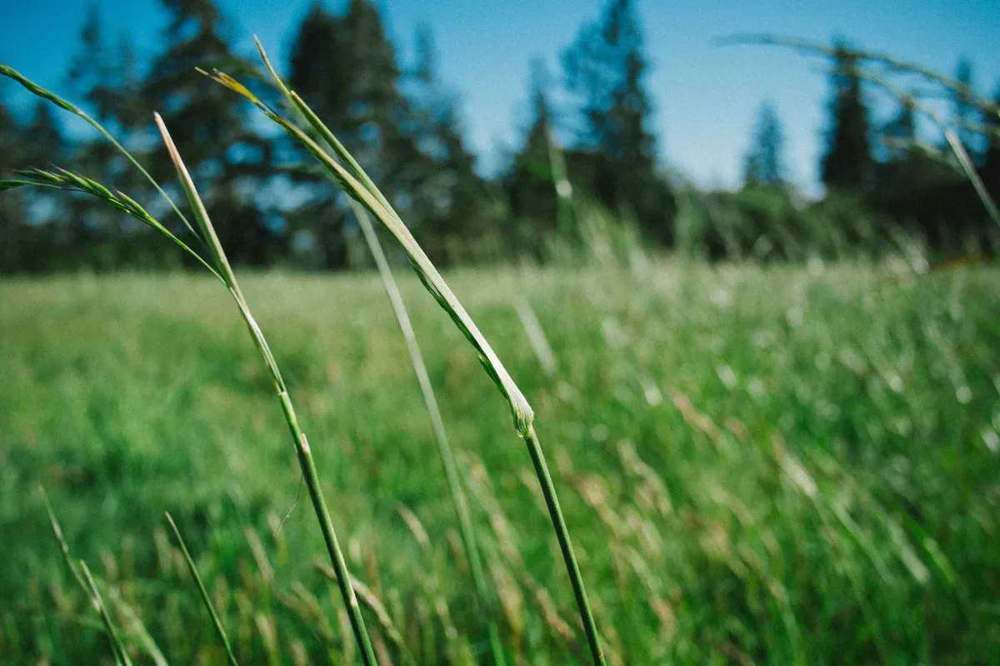

The Long Glen
Open valleys and easy climbs. Good for a first walk.
Three days on foot. No signal, no rush, no crowds.
Every trail ends somewhere worth the walk.
Book a walk
You carry a day pack. We move your bags between stops, book the beds and know where the dry path is when it rains.

Open valleys and easy climbs. Good for a first walk.
Shaded paths through old woodland and two river crossings.
Sea cliffs on day one, the high ridge on day three.
Choose a route and a date. Groups are capped at eight.
Beds, meals and bag transfers are booked before you arrive.
Your guide sets the pace, and you get a lift back to the start on the last day.
If you can walk five hours with breaks, The Long Glen is fine. Each walk lists its distance and climb so you can judge.
It will, a little. Your guide reroutes on bad days, and every stop has a drying room.
Most of our walkers do. You get your own room for a small supplement.
Leave your email and preferred month. We reply within a day with open dates.
Thanks. This is a demo, so nothing was sent, but on a live site your request would arrive in our inbox.